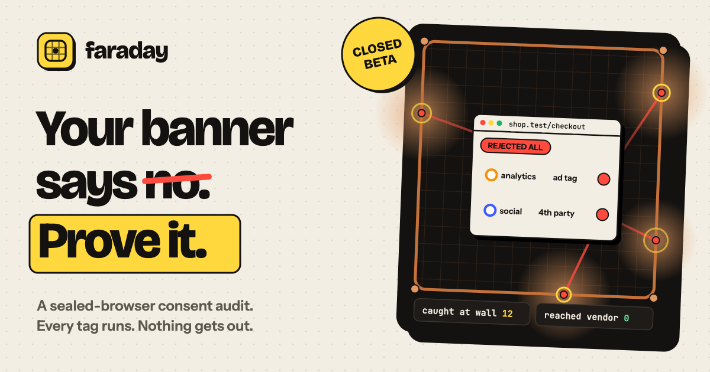

Brand system · v0.1
Faraday shares Pixel Lab's ink outlines, hard shadows and yellow signal color. Copper is its own: the color of the wall that catches every request.
Positioning
For privacy, legal and marketing-tech leads who need proof instead of a checklist, Faraday is a sealed-browser audit that shows what every tag on a site does with a synthetic person's data under every consent choice. Scanners check whether the rules were followed. Faraday shows what actually left, where it went, and whether "no" was respected.
Logo
A Faraday cage with one contained signal. Use the yellow tile by default, the ink tile on photos and dark slides, and the copper tile only for print accents.
Color
Green and red mean a choice was held or broken. They're never used for decoration.
#FFD83DLook here: CTAs, highlights
#141210Outlines, shadows, text
#F3EEE3The ground
#C4713AThe cage wall, nothing else
#12B76AThe choice was respected
#FF4B3EThe choice was ignored
Type
Voice
Share image
1200×630 for link previews and the first slide of a deck. Hollow dots respected the choice. Red dots ignored it. All of them stop at the copper wall.

The synthetic visitor in every demo. Every field on her card is fabricated and traceable to the run that created it. She appears in copy as a person ("Foolia said no") because the buyer is thinking about their customers.
Copper lattice, rivets at the corners, a yellow ring where a request lands. It's the one illustration Faraday owns. Use it wherever the product needs a picture.
Tilted yellow or green discs with hard shadows, for a single fact: "Closed beta," "0 vendor hits." No more than two per view.
Faraday · a working name, pending trademark search · Product · Partner brief · Back to hord.brayden